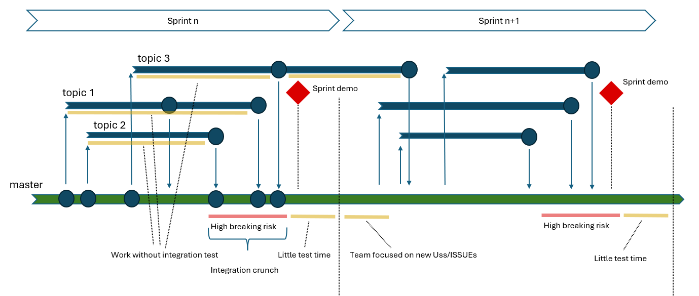
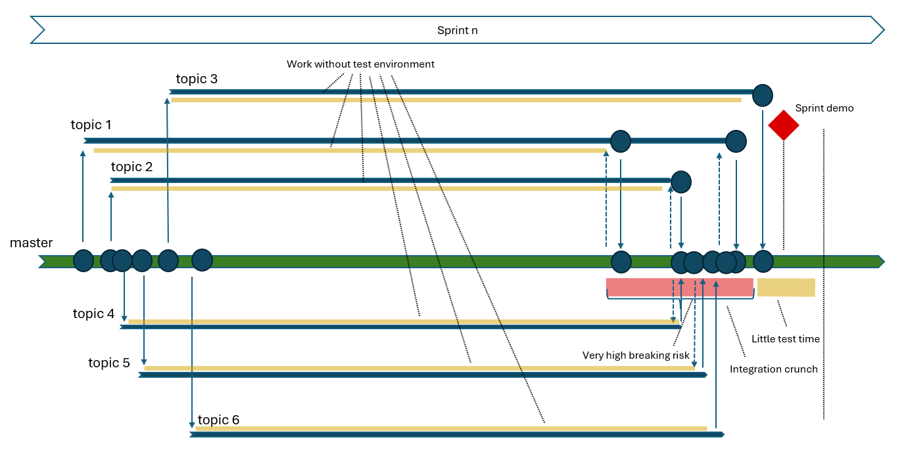
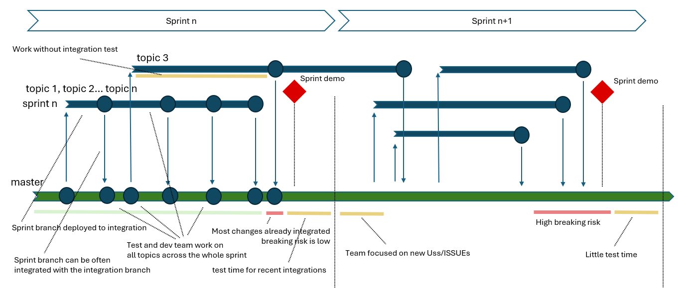
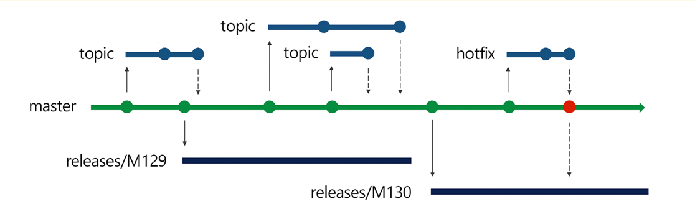
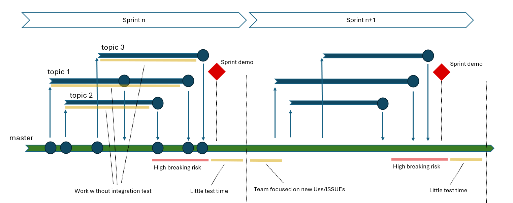
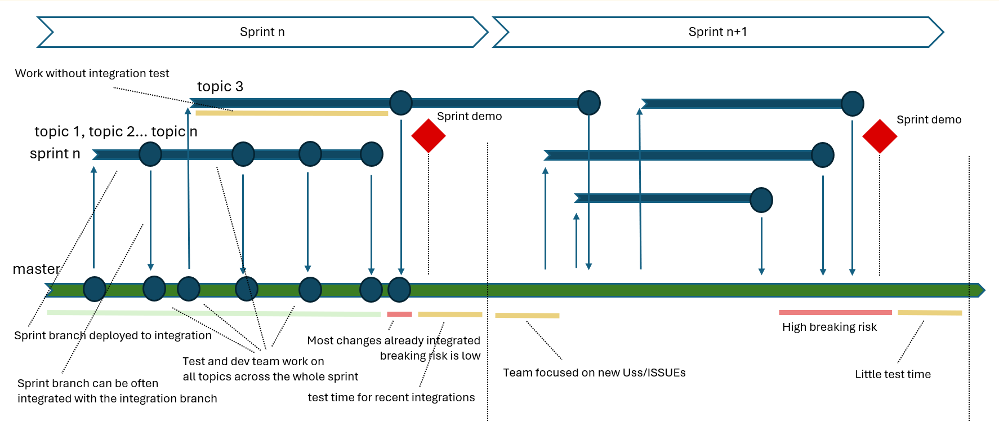
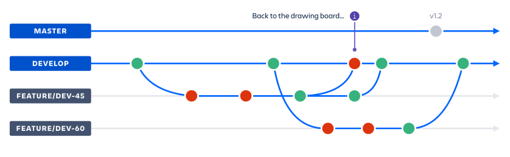
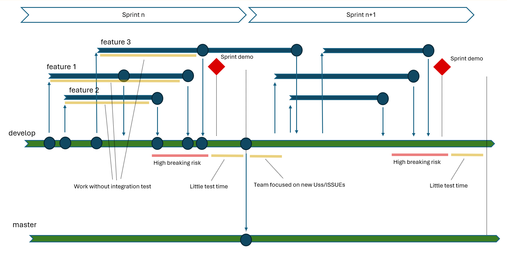
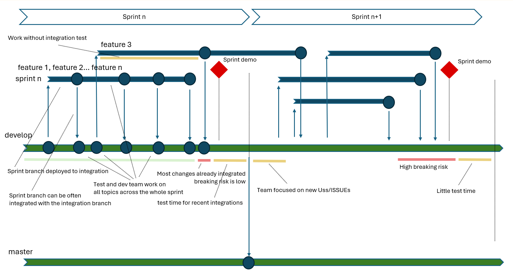

Overview
In modern Agile Development, teams work in short iterations (sprints) to deliver incremental progress. This involves implementing features, fixing bugs, and integrating the work of multiple developers by the end of the sprint.
A common issue happens when multiple topics are managed by the team on parallel branches where work is integrated late into the sprint timeline.

With such organization, developers often work alone, on their branches, for most of the sprint duration and all the topics are tested with very limited integration with each other.
The “integration crunch” period usually brings high risk of breaking the application.
This normally happens late into the sprint, where only little time is left for the developer and test team to detect and solve issues.
Things become even worse in case many topics are managed in short sprints (eg. Two weeks sprints), PR approval is mandatory and PR review is required before merging to master for all the changes.
In such cases, integration activities may be further delayed and the integration crunch is even more compressed and pushed to the end of sprint.

In such condition, sprint closure may become a complex time that jeopardizes the application stability.
Needless to say the “sprint demo” happening exactly in that moment may strongly suffer from that problem.
Why Risk-Driven Branching
The idea of Risk-Driven Branching is to introduce a pragmatic solution to the problems of late integration and testing by adapting Agile workflows to focus on frequent and progressive integration.
This strategy can be applied across different branching models; the diagrams we are using are based on trunk-based development; we’ll later see that the same concepts perfectly apply to other branching strategis such as GitFlow or Github flow.
With Risk-Driven Branching most topics development happens on a single branch dedicated to the sprint or directly on the integration branch.
Only for high breaking risk topics a dedicated branch is created.

In this case only one branch is used for all low breaking risk topics and dedicated branches are chosen for high braking risk topics (topic 3, in our example).
The idea here is that for low breaking risk topics:
- Integration happens immediately across the sprint
- Sprint and integration branches are integrated with partial implementations across the sprint
- All the developer team work together on all topics
- All test team works on the environment with all in-progress topics
For this to work - Developers are responsible to commit non breaking changes to the sprint or integration branch
In case partial topics are committed Feature flags should be available to allow branch release in any moment, at least with partial or untested implementations disabled. - In case a breaking change is committed by mistake across the sprint, it should be all team priority detect and solve it.
Keeping this development approach by “small non braking changes” is normally easy for most topics. In this case, most integration will already be done at sprint end and merge operations at the end of sprint may become almost irrelevant (and with low risk).
Core Principles of Risk-Driven Branching:
Core principles that guide the Risk-Driven Branching approach include:
- Early and Frequent Integration: Most integrations occur progressively throughout the sprint, keeping the codebase up-to-date and minimizing the risk of large-scale conflicts.
- Focus on Non-Regression: Every development step emphasizes maintaining stability and avoiding regressions.
- Continuous and anticipated Testing: Automated tests run on all changes from Day 1, providing instant feedback to developers and testers.
- Shared Awareness: Developers and testers benefit from working on the latest integrated code, fostering collaboration and shared responsibility.
This approach effectively mitigates the risks of late integration while enhancing team productivity and code quality.
Benefits of Risk-Driven Branching include: 1. Minimized Merge Conflicts: By integrating frequently, teams avoid the pile-up of changes that lead to complicated conflicts. 2. Early Feedback Loop: Continuous testing and integration ensure developers receive feedback on potential issues early in the sprint. 3. Improved Stability: Regular validation and non-regression testing ensure that the codebase remains stable throughout the sprint. 4. Enhanced Collaboration: Developers can immediately see the impact of others’ work, facilitating better coordination and reducing surprises. 5. (Last but not least) Boosted Test Team Productivity: Testing happens on progressively refined and later versions of the code, reducing redundancy and increasing efficiency.
These advantages make Risk-Driven Branching a robust strategy for Agile teams seeking to balance velocity and reliability.
Comparing Standard Integration vs. Risk-Driven Branching
The following table summarizes the differences between standard branching and Risk-Driven Branching:
| Aspect | Standard branching | Risk-Driven Branching |
|---|---|---|
| Integration Timing | Happens near the end of the sprint | Happens progressively throughout sprint |
| Merge Conflicts | High probability of significant conflicts | Minimal conflicts due to frequent merges |
| Testing Timeline | Minimal testing before sprint ends | Early, continuous testing from Day 1 |
| Regression Risks | High, due to rushed and incomplete testing | Lower, thanks to early validation |
| Team Collaboration | Limited visibility into others’ changes | Immediate feedback fosters collaboration |
| Tester Productivity | Limited by late-stage changes | Boosted by working on refined versions |
| Developer Productivity | Limited by working alone on separate branches | Boosted early integration with other developers work |
Risk-Driven Branching reduces risks while enhancing collaboration and productivity for both developers and testers.
How Risk-Driven Branching Applies to Agile Methodologies
Trunk-Based Development
All diagram shown up to now applies to Trunk based development. In this case master branch works as the “Integration” branch where all developers work is integrated.
According to release planning requirements, release branches are taken from master and refined until release conditions are met.

As discussed in the previous chapters, with trunk based development The “Integration crunch” can happen at the end of every sprint

As discussed, risk driven branching can reduce its complexity and risk for the benefit of the team sprint demos and the overall application stability.

GitFlow Strategy
With Gitflow strategy the “integration” branch is normally named develop and after interation work releases are done to the master branch:

In the chart below you can see Gitflow can suffer from the “integration crunch” exactly as other Agile methodologies.

As discussed, applying Risk-Driven Branching principles, GitFlow can benefit from early integration, early test and feedback loop, improved stability and boosted teams productivity.

Conclusion
Risk-Driven Branching transforms traditional Agile workflows by addressing the critical risks of late integration and testing.
It empowers teams to: - Integrate frequently and progressively, minimizing conflicts and improving stability. - Focus on non-regression and maintain a consistently testable and deployable codebase. - Enhance collaboration and productivity for both developers and testers.
Whether applied to trunk-based development, GitFlow, or other strategies, Risk-Driven Branching offers a practical and adaptable framework for balancing agility and stability in modern software development.
Reference
Top 4 Branching Strategies and Their Comparison: A Guide with Recommendations